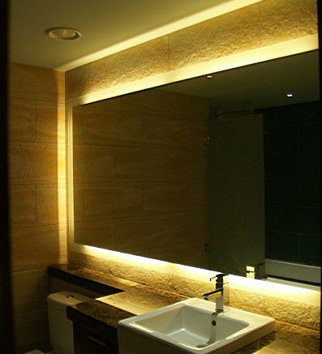
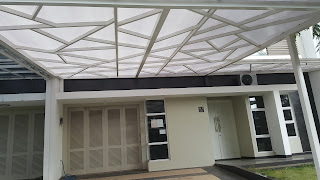

Semakin berkembangnya dunia pembangunan, maka hadir banyak material penambah yang melengkapi estetika sebuah banguanan. Kaca semakin melengkapi bangunan supaya menonjol lebih cantik dan memiliki nilai estetika seandainya di pandang orang. Banyak tipe dari kaca yang bisa di pakai untuk banguan maupun rumah tinggal.
Tak kaca tempered, kaca shower, kanopi kaca, parket kayu jati dan masih banyak lagi. Tak cuma material kaca sekarang juga terdapat material kayu atau parket lantai kayu jati. Berikut ini sedikit penjelasan mengenai pelbagai macam kaca dan fungsi kaca dan juga parket lantai kayu jati yang bisa anda temukan.
Jual Kaca Cermin di Pangkalpinang

Kaca cermin tak cuma berfungsi untuk bercermin saja namun juga sebagai pemanis ruangan. Tapi, Anda semestinya memilih desain cermin yang unik, elegan, dan layak dengan tema desain interior rumah Anda. Ada banyak sekali desain cermin yang dapat Anda pilih. Ada cermin persegi yang ditempel beraturan, cermin berbentuk seperti daun, dan lain sebagainya. Sementara itu, dikala diperhatikan dari luar, kaca ini reflektif. Artinya, Anda tak bisa mengamati yang ada di dalam ruangan.
Tidak cuma itu, harga yang di tawarkan sangatlah relatif murah dengan kualitas dan juga kualitas terbaik. Karenanya hanya persegi atau persegi panjang. Anda dapat menambahkan frame atau tanpa frame cocok dengan kesukaan Anda. Cermin ini lazimnya ditempatkan di kamar mandi, di atas wastafel, atau di kamar tidur. Tidak anda beratensi untuk memiliki kaca tempered Pangkalpinang baik sebagai pemanis ruangan atau sebagai pintu, anda bisa seketika mengunjungi dis.or.id. Disana anda dapat menerima kaca cermin Pangkalpinang yang layak dengan kemauan anda.
Info Pemesanan Selengkapnya
Google Maps: https://www.google.com/maps/d/u/0/viewer?mid=1HNPQwTg5M-VmcXHvNbVncTuxY7ALbdIQ&ll=-7.27380280025364%2C112.65243155000007&z=18
Note: https://www.facebook.com/notes/distributor-of-industrial-supply/pabrik-supplier-kaca-cermin/1785720801727799/
Event: https://www.facebook.com/events/135275393812568/
Distributor & Supplier Pintu Kaca
Banyak orang yang lebih suka dengan figur pintu kaca minimalis, yaitu pintu kaca frameless. Tidak Anda suka dengan pintu kaca dengan frame, Anda bisa pilih apakah bingkai hal yang demikian terbuat dari bahan kayu atau aluminium. Kini hal yang demikian dapat terbuat dari kayu atau aluminum. Desain hal yang demikian dapat disesuaikan dengan konsep properti Anda. Sekarang tak keok penting lagi ialah pemilihan kaca. Dalam hal ini, terdapat sebagian ragam kaca dengan kwalitas yang terbaik. Kini paling banyak diminati dikala ini merupakan kaca tempered sebab jauh lebih kuat dan bendung lama.
Anda bisa menerima pintu kaca yang dibutuhkan dengan mangunjungi dis.or.id.
Kaca yang di gunakan merupakan kaca dengan mutu terbaik. Dis.or.id memiliki energi yang telah sangat profesional di bidang ini. Untuk budget yang lebih sedikit, Anda bisa memilih macam kaca non-tempered.
Jasa Pemasangan Railing Kaca
Railing kaca sekarang kian banyak alternatifnya. Tidak konsep rumah modern ketika ini, kebanyakan rumah dibangun dengan desain minimalis. Maka dari itu, bagian-komponen tangga tak lagi dihasilkan dengan bahan kayu. Dan kaca ini bisa Anda pakai sebagai bahan untuk membuat kaca railing. Maka dari itu, para produsen berusaha untuk menghasilkan railing yang terbuat dari kaca dengan model yang berbeda-beda.
Anda bisa memilih kaca dengan kwalitas terbaik. Tidak ini tidak hanya diatur oleh ketebalan atau harga tetapi juga oleh jenis. Ada kaca tempered yang sekarang diminati banyak orang. Dikatakan sangat aman lantaran kaca tempered tidak memunculkan pecahan yang runcing saat tiba-tiba kaca pecah entah itu pengaruh kecelakaan atau musibah seperti gempa. Pecahannya betul-betul kecil dan lembut sehingga tidak akan melukai siapa saja yang terkena pecahan. Ini menetapkan kuatnya konstruksi railing kaca.
Railing kaca dengan kwalitas terbaik dapat anda dapatkan di dis.or.id. ukuran dan ketebalan railing kaca telah tersedia. Tentu dengan harga yang murah tapi tetap berkelas.
Distributor, Supplier & Jasa Pasang Kanopi Kaca

Banyak jenis kaca kanopi yang dipakai sebagai atap, tidak hanya satu ragam saja. Seiring dengan perkembangan zaman di dunia properti, kini kanopi kaca terlah berkembang pesat mengikuti arsitektur modern . Dan sensasi mandi menjadi lebih asik untuk dirasakan. Harga atap kaca per meter persegi juga benar-benar diberi pengaruh oleh struktur pensupport yang di pakai. Ada banyak opsi varian desain. Apabila tembus pandang, kaca mengabsorpsi cahaya yang masuk sehingga kian tebal kaca maka kian sedikit cahaya yang bisa melaluinya, karenanya sifat transparannya makin berkurang. Atap akrilik atau bisa juga disebut atap kaca acrylic ini banyak ditemukan di sebuah bangunan rumah, seperti ruko, apartemen, cafe, mall, sampai bangunan gedung.
Dis.or.id juga menyediakan jasa pemasangan kanopi kaca yang tentunya dengan bantuan energi professional yang sudah berpengalaman. Banyak bangunan seperti gedung perkantoran, perumahan, ruko dan apartement yang memakai kanopi kaca tempered. Setelah kaca untuk atap kanopi cukup digemari. Tidak anda sedang mencari kanopi kaca, anda dapat lantas mengunjungi dis.or.id.
Distributor & Supplier Kaca Shower
Pintu Kaca Shower pada kamar mandi yakni salah satu opsi yang bagus untuk desain interior kamar mandi modern. Penyekat ini akan memisahkan antara daerah berair yang digunakan untuk mandi atau meletakan shower dan tempat lain yang yaitu zona kering. Cara ini memang desain shower berbahan kaca memang lebih banyak digunakan daripada desain shower berbahan tirai. Kalau pemasangannya juga betul-betul gampang dijalankan dan tidak memerlukan waktu yang lama. Kelebihan shower screen dibanding dengan sistem penyekatan yang lain adalah diwujudkan dalam format yang telah jadi dan tinggal dipasang saja.
Tidak anda sedang memerlukan kaca shower, hal yang perlu anda lakukan yakni mengunjungi dis.or.id. Tak cuma itu, kaca shower yang di beli di dis.or.id pemasangan lebih gampang dan fleksibel.
Distributor, Supplier & Jasa Pasang Kanopi Kaca
Salah satu tipe kanopi kaca yang bisa anda aplikasikan pada atap merupakan atap kaca skylight yang adalah kanopi kaca dalam format jendela horizontal atau kubah yang umumnya ditempatkan di atap bangunan yang mempunyai maksud untuk pencahayaan ruangan. Seiring dengan perkembangan zaman di dunia properti, sekarang kanopi kaca terlah berkembang cepat mengikuti arsitektur modern . Jadi sudah tak heran lagi seluruh orang berharap mencari harga yang sangat kompetitif untuk menyesuaikan budget atau anggaran mereka masing – masing untuk membikin produk canopy kaca. Jikalau tembus pandang, kaca mengabsorpsi sinar yang masuk sehingga kian tebal kaca karenanya semakin sedikit sinar yang bisa melewatinya, karenanya sifat transparannya makin berkurang.|Di samping pintu kaca shower akan membikin kamar mandi kecil nampak lebih besar. Pada atap akrilik, penyerapan cahaya yang terjadi demikian kecil sehingga sedangkan ketebalannya bertambah, sifat transparannya tidak banyak berubah. Atap akrilik atau bisa juga disebut atap kaca acrylic ini banyak ditemukan di sebuah bangunan rumah, seperti ruko, apartemen, resto, mall, hingga bangunan gedung.
Tidak anda ketika ini sedang membutuhkan kanopi kaca, anda dapat langsung mengunjungi dis.or.id. Disana anda dapat mendapatkan atap kanopi kaca dengan mutu terbaik dan harga terjangkau. Banyak bangunan seperti gedung perkantoran, perumahan, ruko dan apartement yang menggunakan kanopi kaca tempered. Kalau fungsi utama kanopi sebagai pelindung untuk bangunan tersebut, pemasangan kanopi kaca juga bisa membikin bangunan menjadi menonjol lebih menawan dan menarik, apalagi menerapkan konsep yang sama dengan konsep rumah minimalis. Setelah kaca untuk atap kanopi cukup digemari. Tidak anda sedang mencari kanopi kaca, anda bisa segera mengunjungi dis.or.id.
Jasa Maintenance Kaca

Jasa maintenance kaca adalah perusahaan yang akan menolong supaya gedung perkantoran Anda kelihatan seperti baru. Salah satunya pelayanan berupa pembersihan gedung yang terbuat dari kaca. Tidak kaca tak kusam, maka kaca harus dibersihkan secara regular. Kecuali hanya membersihkan kaca, jasa maintenance kaca juga dapat melakukan pembenaran.
Dis.or.id menyiapkan segala jenis kaca pantas kebutuhan dikala ini.
Dis.or.id memahami semakin banyak gedung pencakar langit dengan betuk yang berbeda-beda. Untuk itu, alat-alat semestinya komplit sehingga kami mampu membersihkan semua sudut gedung. Dis.or.id memiliki semua energi ahli yang di rekrut hanya mereka yang profesional yang tahu persis bagaimana metode mengaplikasikan alat dan bagaimana membersihkan kaca gedung bertingkat.
Jasa Pemasangan Kaca Tempered
Tak anda mebutuhkan jasa maintenance kaca, anda bisa mengunjungi dis.or.id. Disana anda dapat memanfaatkan jasa maintenance kaca dengan energi spesialis yang cakap membersihkan gedung kaca dengan produk pembersih kaca apa yang terbaik untuk menghilangkan kotoran dan kusam. Banyak bagian properti yang dapat diwujudkan dengan bahan berupa kaca tempered. Untuk gedung perkantoran, komponen yang paling tak jarang dihasilkan dengan bahan yang satu ini adalah jendela dan pintu. Tapi dulu hanya gedung perkantoran atau pusat perbelanjaan modern saja yang menggunakan tipe kaca ini, kini rumah hunian juga telah dibangun dengan kaca tempered.
Namun, pemasangan kaca tempered ini sepatutnya ekstra hati-hati. Dis.or.id menawarkan jasa pemasangan kaca tempered karena kami mempunyai alat yang komplit. Anda bisa segera mengunjungi dis.or.id untuk menerima kabar mengenai jasa pemasangan kaca tempered, menerapkan kaca tempered dan pastinya hasil yang diberi malah akan layak dengan apa yang Anda inginkan.
Distributor & Supplier Pintu Lipat Kaca

Pastinya anda sudah mengetahui banyak kelebihan dari kaca tempered.Pintu lipat kaca diterapkan saat ruangan diterapkan untuk hal yang privacy. Anda bisa mencari figur pintu lipat kaca tempered minimalis lainnya. Macam kaca nomor 6 ini benar-benar dianjurkan untuk dibuat sebagai bahan membikin pintu lipat kaca.
Ukuran kaca menjadi unsur penentu berapa harga pintu kaca lipat yang Anda inginkan. Banyak pertimbangan yang membuat Anda pasti yakin untuk memilih kaca tempered ketimbang jenis kaca yang lainnya. Hinges yakni aksesoris vital, karena aksesoris inilah yang berperan untuk menyangga berat pintu kaca lipat.
Jasa Pemasangan Kubikel Toilet
Kubikel kaca banyak ditemui di berjenis-jenis tempat besar seperti perkantoran, gedung, bahnkan kini juga dapat di gunakan untuk hunian rumah. Kubikel kamar mandi bisa di gunakan di kamar kecil mall.
Anda juga bisa membuat kamar kecil di space yang lebih kecil dan tak membutuhkan lahan yang begitu besar untuk membikin kamar kecil yang banyak. Jika anda sedang memerlukan kubikel toilet, anda dapat segera mengunjungi website dis.or.id. Kaca sebagai penyekat dalam kamar mandi biasa disebut kaca shower. Kaca shower banyak digunakna sebab memberikan kesan mewah.
Tersedia berbagai ukuran serta ketebalan dari kubikel yang bisa anda pilih pantas dengan yang anda inginkan.
Jikalau anda dikala ini sedang memerlukan kaca shower untuk kamar mandi, lantas saja kunjungi dis.or.id untuk melakukakn pengorderan ataupun menanyakan terperinci harga dari kaca shower. Kaca shower yang di jual di jamin kaca shower yang memiliki mutu terbaik dan berkualitas tinggi.
Distributor & Supplier Partisi Kaca
Partisi kaca tidak dijumpai di perkantoran modern atau perbelanjaan. Anda bandingkan sendiri berapa yang Anda sepatutnya siapkan untuk membikin partisi tembok. Anda wajib beli batu bata, pasir, dan semen. Selain itu, prosesnya juga memakan waktu sehingga Anda dapat menghembat biaya pemasangan. Biaya yang satu ini tergantung lama pelaksanaan. Berbeda bila Anda memilih partisi kaca. Tidak cuma rumah, sekarang perkantoran juga dijadikan sedemikian rupa agar sungguh-sungguh minimalis dan menarik. Atas pertimbangan efisiensi, maka banyak orang yang beralih ke partisi kaca. Mutu, banyak rumah hunian yang partisi kaca. Anda harus tahu ada kaca transparan, semi transparan dan kaca yang sama sekali tidak transparan yang disebut dengan kaca tempered Pangkalpinang. Partisi kaca dengan terbaik dan berkualitas anda dapatkan di dis.or.id. Disana anda menerima partisi kaca dengan harga yang benar-benar . Disana anda akan mendapatkan partisi kaca yang layak dengan harapan anda.